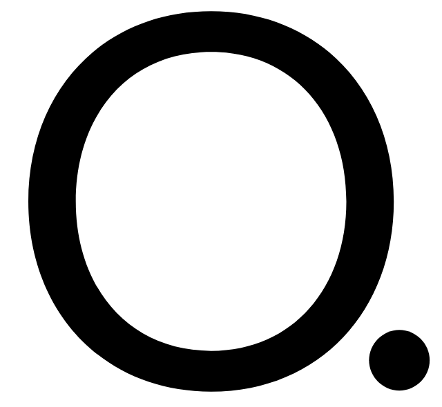
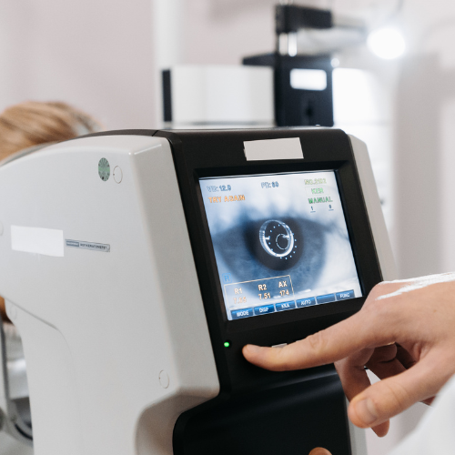
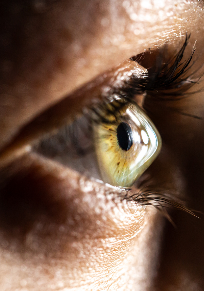
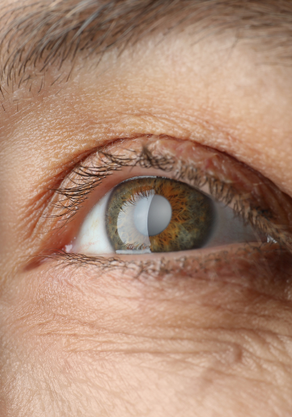

Cabinet du Parc Ophtalmologie · Lyon 6
Myopie, hypermétropie, astigmatisme ou presbytie — des techniques laser et implants éprouvés pour corriger votre vue avec précision, après un bilan préopératoire complet.
Après une topographie cornéenne et un bilan de réfraction complet, nous vous orientons vers la technique la plus adaptée à la morphologie de votre œil et au trouble à corriger.

Une correction par remodelage de la cornée au laser, en surface (PKR) ou sous un fin volet cornéen (LASIK), pour traiter la myopie, l'hypermétropie et l'astigmatisme.
Myopie, hypermétropie et astigmatisme modérés, cornée d'épaisseur suffisante.
Intervention ambulatoire d'une quinzaine de minutes par œil, sous anesthésie topique.
Vision fonctionnelle en 24 à 48h pour le LASIK, quelques jours pour la PKR.
Dr Camille Vasseur — voir le profil

Une lentille correctrice est placée devant le cristallin, sans le retirer — une alternative réversible pour les fortes amétropies non éligibles au laser.
Fortes myopies ou hypermétropies, cornées trop fines pour une chirurgie laser.
Intervention ambulatoire, geste réversible et sans retrait de tissu cornéen.
Reprise des activités habituelles en quelques jours.
Dr Camille Vasseur — voir le profil
Une technique laser qui compense la perte de vision de près liée à l'âge, en créant une multifocalité cornéenne adaptée à votre dominance oculaire.
Patients presbytes de plus de 45 ans souhaitant réduire leur dépendance aux lunettes.
Protocole proche du LASIK classique, précédé d'un bilan de dominance oculaire.
Adaptation progressive de la vision sur quelques semaines.
Dr Camille Vasseur — voir le profil
Topographie cornéenne, mesure de l'épaisseur de la cornée et de la réfraction pour déterminer la technique adaptée.
Explication détaillée des options possibles, de leurs bénéfices et de leurs limites selon votre profil.
Geste ambulatoire, laser ou implant, sous anesthésie locale, en cabinet ou clinique partenaire.
Contrôles rapprochés jusqu'à la stabilisation complète de votre vision.